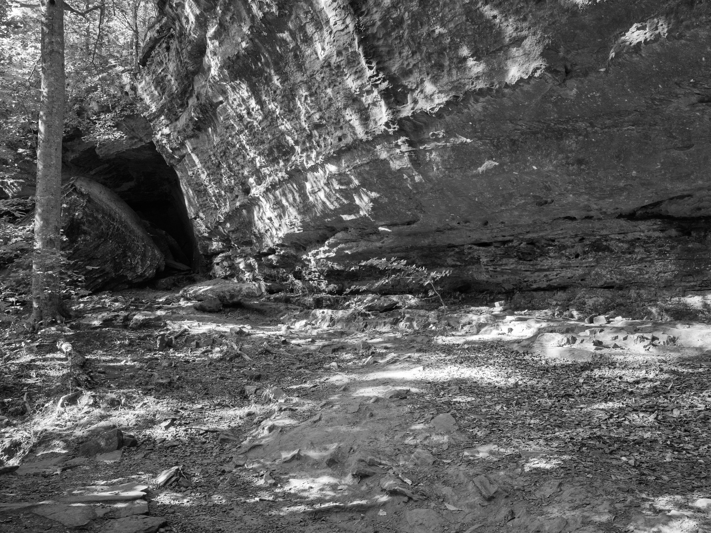
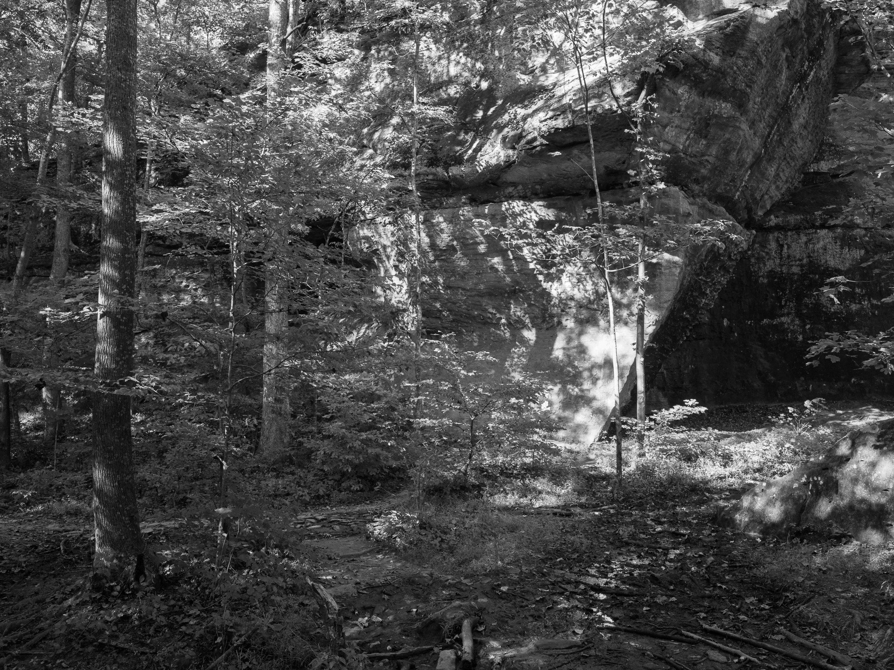
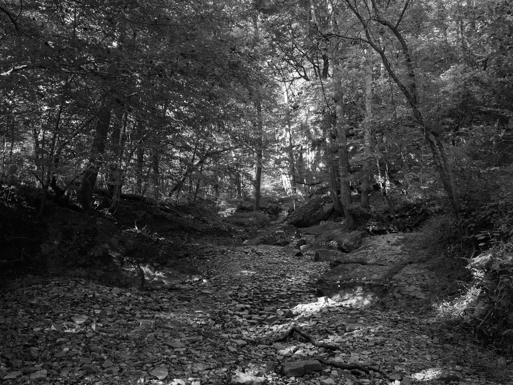
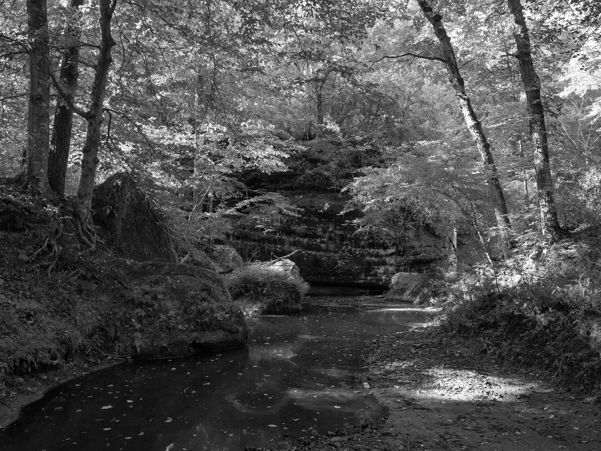
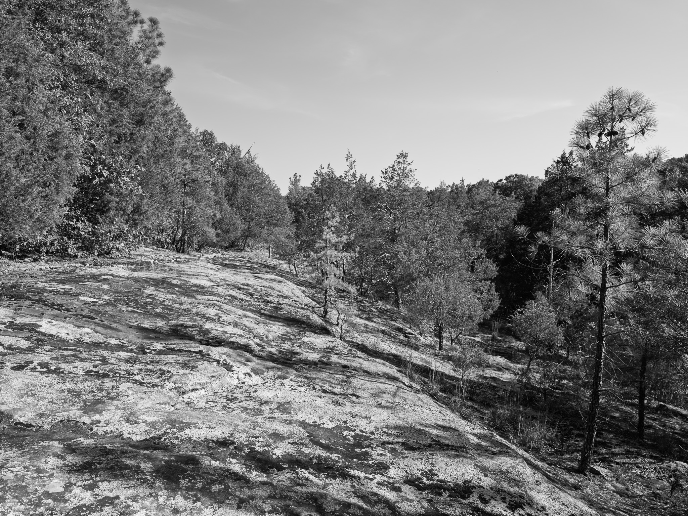
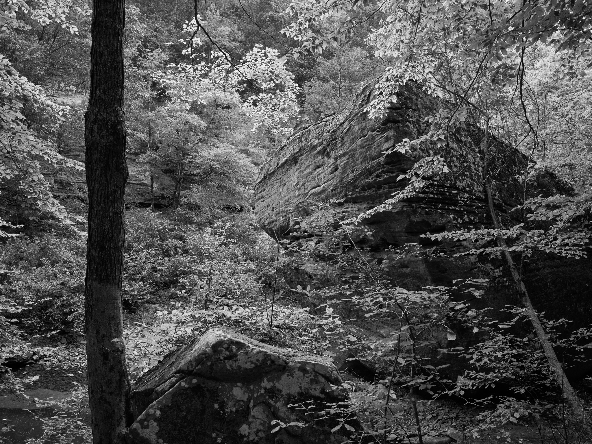
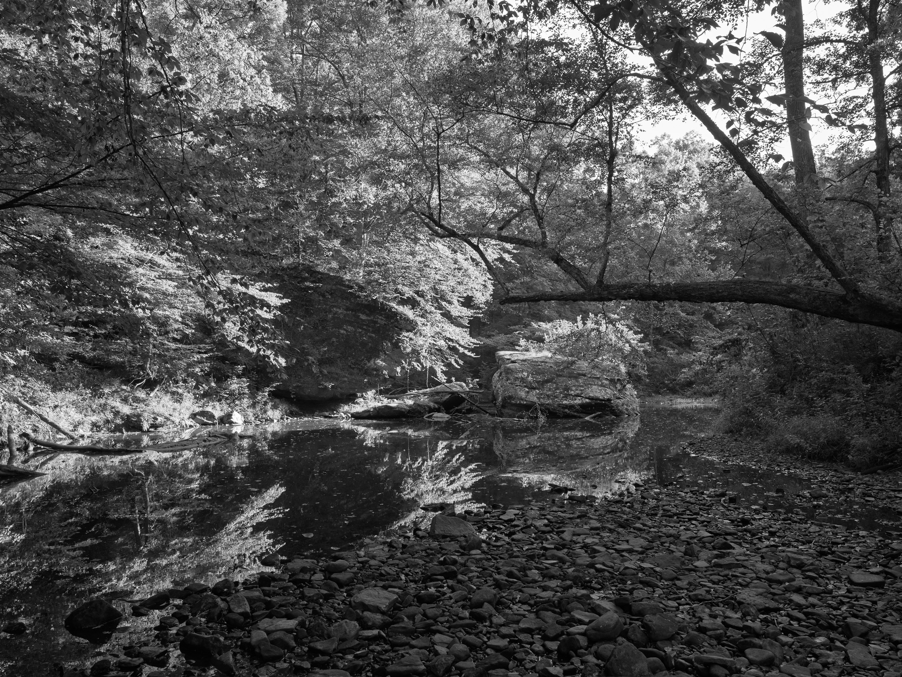

Public Lands Institute
Map
Images
Archive
About
Bell Smith Springs Recreation Area
IL

Bell Smith Springs Recreation Area 1 · 2026-08-30
_DSF4425.jpg

Bell Smith Springs Recreation Area 2 · 2026-08-30
_DSF4427.jpg

Bell Smith Springs Recreation Area 3 · 2026-08-30
_DSF4429.jpg

Bell Smith Springs Recreation Area 4 · 2026-08-30
_DSF4433.jpg

Bell Smith Springs Recreation Area 5 · 2026-08-30
_DSF4441.jpg

Bell Smith Springs Recreation Area 6 · 2026-08-30
_DSF4446.jpg

Bell Smith Springs Recreation Area 7 · 2026-08-30
_DSF4450.jpg
View all 7 images →
← Caldwell Nature Preserve
Hovey Lake Fish and Wildlife Area →